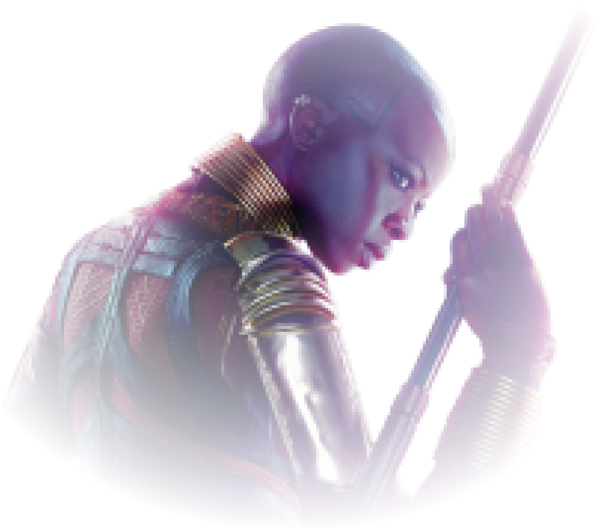

Releve le defi
des dora milaje
Les Dora Milaje sont de farouches guerrières d’élite. Elles
constituent la garde rapprochée du Roi en personne et ont de
nombreuses occasions de lui sauver la vie. Leur Générale, Okoyé est
également la dirigeante des forces armées et des renseignements
wakandais.
Prouve ton talent d’espion et déchiffre cette réplique d’Okoyé écrite
en Wakandais, et apprend par la même occasion la première valeur d’une
Dora Milaje !